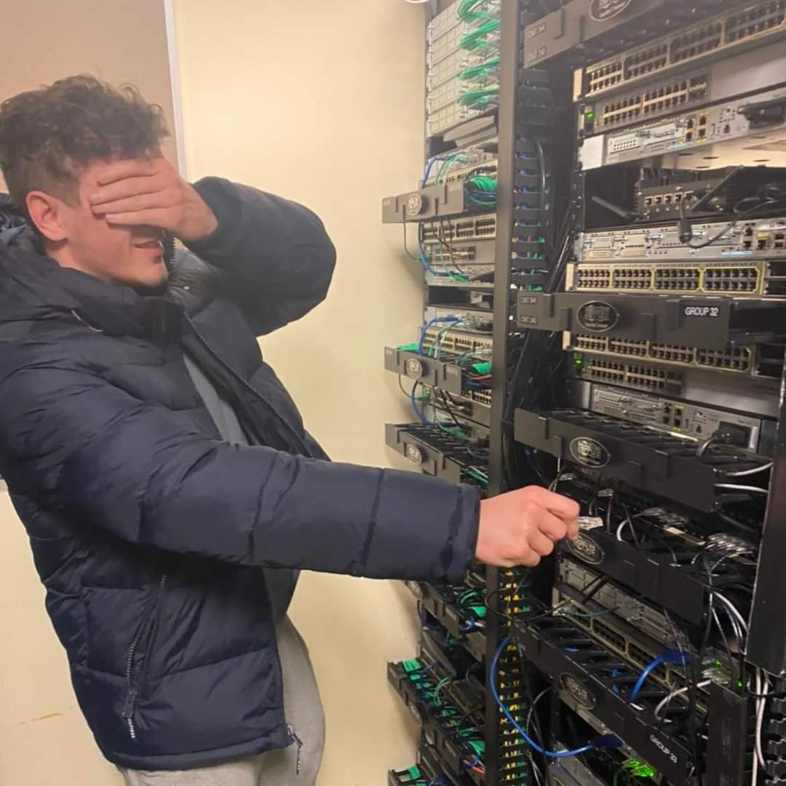
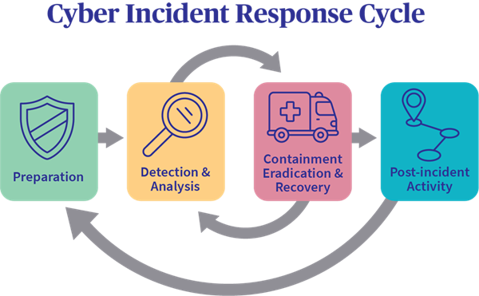

Thank you for coming here, this portfolio showcases various projects I've done in the form of professional reports I've written. These documents cover everything from Network Security, Application Security, Penetration Testing, Incident Response Plans, and Small Mock Corporate Environments


I designed and implemented diverse VPN tunnels in a virtual environment. From traversing multiple domains and overcoming firewalls to establishing connections across various networks, this project showcases my expertise in configuring and securing VPN solutions. Employing protocols like OpenVPN and IPsec, I ensured robust encryption and authentication, demonstrating a nuanced understanding of network security principles.

In this personal project I did for fun, I transformed a Raspberry Pi into a smart AI assistant, creating a versatile and interactive home automation system. Starting with flashing the operating system, I downloaded and configured packages enabling the Raspberry Pi to seamlessly interact using both speech synthesis and speech recognition capabilities. The integration of a microphone and speaker allowed the AI assistant to comprehend voice commands and respond intelligently. This project not only showcased my technical skills in configuring hardware and software for optimal performance but also highlighted my creativity in developing a functional and personalized AI assistant that brings convenience to daily tasks. The Raspberry Pi AI assistant is now a valuable addition to my home, demonstrating the potential for affordable and accessible AI solutions in a domestic setting.
This project focused on elevating network security through the implementation of captive portals. I installed a certificate Server on the two domain controllers, configured new firewall interfaces, and established a Windows 10 client for a secure network segment to create the captive portal on. To allow the captive portal to work, I implemented FreeRADIUS on the PfSense Firewall for user authentication. The Linux DMZ machines were configured to authenticate Active Directory users, ensuring heightened security.
This project involved setting up a Kali Linux Virtual Machine with correct network configurations, installing Nmap and Nessus for vulnerability assessments, and targeting Metasploitable and Ultimate Lamp VMs. I configured Metasploitable and Ultimate Lamp VMs, updated Kali repositories, and integrated Snort for intrusion detection, configuring email alerts and port mirroring. A Security Onion VM with Suricata strengthened the defense, with logging configured for incident monitoring. Deliberate exploits on VMs demonstrated security measures, leading to fine-tuned firewall rules and Suricata email alerts for threat detection. This project showcases my expertise in building a robust cybersecurity infrastructure, combining offensive and defensive strategies for comprehensive network protection.
In this project, I designed and configured a versatile virtual network with a range of essential components. The setup includes a PFsense firewall ensuring robust network security, DNS Domains managed through BIND, and efficient mail services implemented via Postfix and an Exchange Server that I downloaded with powershell and configured. Additionally, an Apache Server was deployed for web hosting, and a Squid proxy server added an extra layer of control and caching. To streamline user authentication and network management, Active Directory Domain Controllers were integrated, enhancing overall system efficiency. This project showcases my expertise in building and optimizing complex virtual network infrastructures, providing a seamless and secure environment for diverse services and functionalities.

For this project I created a Cyber Security Incident Response Plan (CIRP). I conducted a baseline analysis for referencing normal system configurations and network processes. I created a Risk Register, established policies for best practices, and developed a playbook following the NIST incident response framework. This project showcases my ability to create professional documents, and conduct assessments on large networks with various tools and servers.